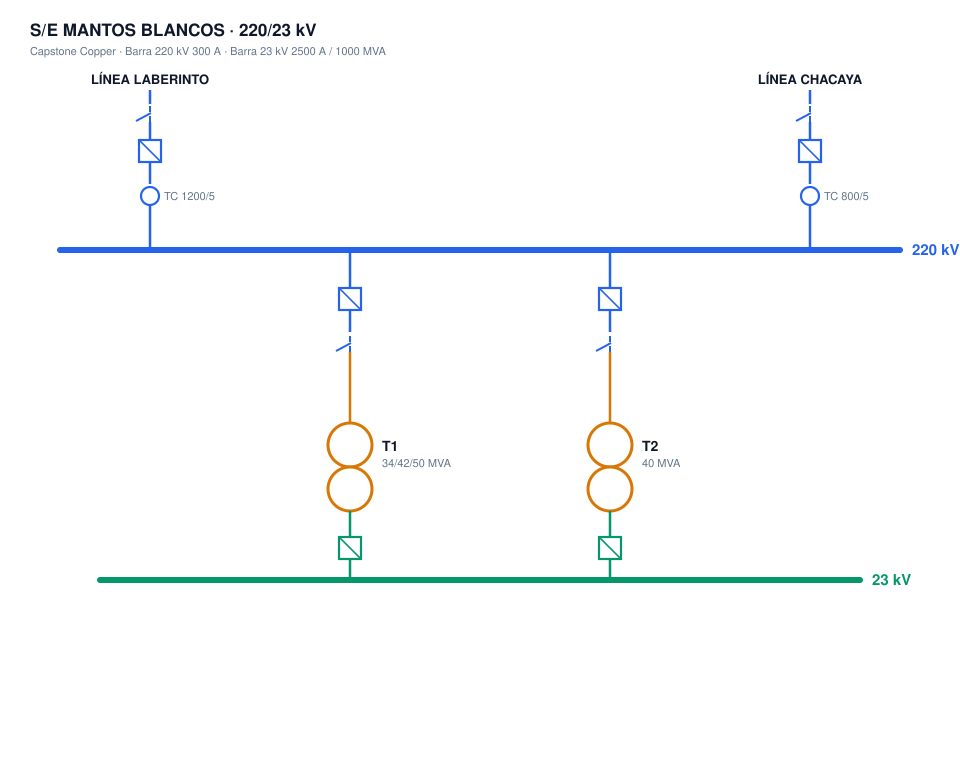
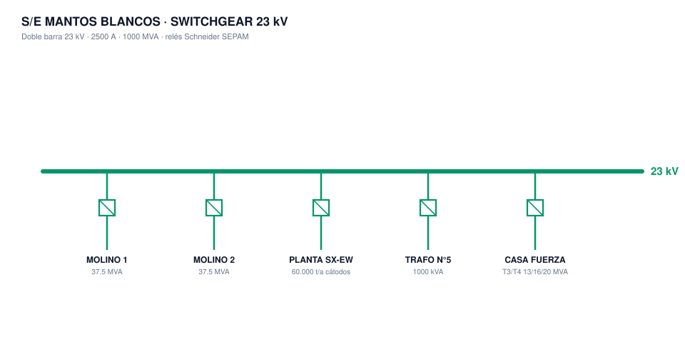
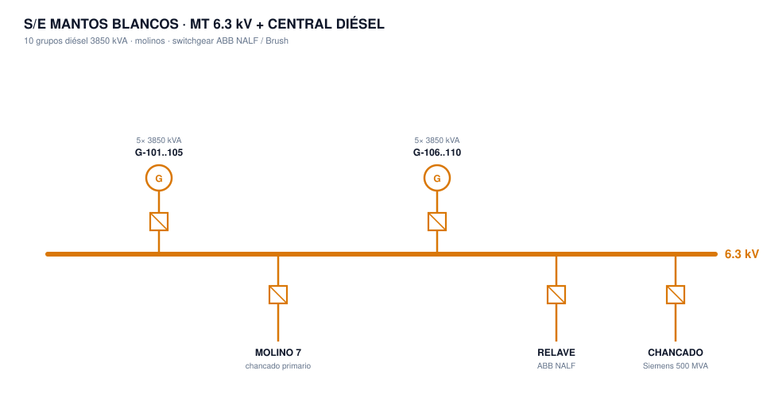

S/E Mantos Blancos — Análisis Técnico & Oportunidades
Capstone Copper · Región de Antofagasta · 220/23 kV · Central diésel propia · Generado 21-08-2026
¿Qué hay?
Subestación
220/23 kV · doble alimentación (Laberinto 70 km · Chacaya 66 km)
Trafos de poder
2× ABB TMY-44 · 34/42/50 MVA · 1995 (30+ años)
Generación propia
10 grupos diésel 3.85 MVA c/u (~38 MVA respaldo)
Relés 220 kV
ABB REL670 ×4 · REB670 ×1 (diferencial de barras)
Relé trafo T1
Schneider MiCOM P643 (S1) · GE D30 (S2)
Switchgear 23 kV
Doble barra · celdas SF6 · relés Schneider SEPAM
Medición
Schneider ION 8690 (facturación 220 kV)
SCADA
RTU existente · flag_scada=FALSE (sin SCADA certificado)
Compliance CEN
Completitud 97.8% · Calidad 54.7% (45% sin certificar)
Lectura: parque de relés heterogéneo (ABB + Schneider + GE, 3 vendors, sin IEC 61850 confirmado) →
dolor de integración y obsolescencia. Trafos de 1995 candidatos a monitoreo o reemplazo. SCADA
parcial y calidad de datos CEN débil (54.7%). Señal clara de modernización + cumplimiento normativo.
Listado de equipos instalados
Relés de protección (marca / modelo / función ANSI)
| Ubicación | Equipo | Función |
|---|
| 220 kV — Líneas | ABB REL670 ×4 (2 líneas × S1/S2) | 21, 79, 25, 50/51, 67N, 68, 50BF |
| 220 kV — Barras | ABB REB670 ×1 | 87B (diferencial de barras) |
| 220 kV — Trafo T1 | Schneider MiCOM P643 (S1) · GE D30 (S2) | 87T, 87N, 59N, 50BF · 21, 68, 59, 50/51 |
| 220 kV — Medición | Schneider ION 8690 | Facturación |
| 23 kV — Switchgear | Schneider SEPAM 20/25 · SEPAM 100S | 50/51, 50G/51G, 67/67N, 50BF, 86, 27/59, 25 |
Transformadores de poder
| Equipo | Potencia | Tensión / detalle |
|---|
| T1 | 34/42/50 MVA | 220/23 kV · DYn11 · ABB TMY-44 · 1995 |
| T2 | 40 MVA | 220/23 kV · ABB TMY-44 (alimenta barra 23 kV por 52E-4) |
| 4130-TL-0004 / 0005 | 37.5 MVA | 23/6.3 kV · ONAN/ONAF (molinos) · NGR 200 A |
| T3 / T4 | 13/16/20 MVA | 24/6.6 kV · YnD1 (central diésel) · Rn 66.6 Ω |
| Trafo N°5 | 1000 kVA | 24/6.3 kV |
Interruptores / switchgear / generación
| Equipo | Detalle |
|---|
| 220 kV | 52J — Laberinto -04L · Chacaya -02L · T1/acoplamiento J1 |
| 23 kV | Celdas SF6 extraíbles · incoming 2500 A/25 kA · alimentadores 1250 A/25 kA |
| 6.3 kV (legacy) | ABB NALF · Siemens 500 MVA · Brown Boveri 350 MVA · BRUSH |
| Central diésel | 10 grupos G-101..G-110 · 3850 kVA c/u (~38 MVA) |
| SS/AA | CA 380/220 V (400 A) · CC 110 Vcc (cargadores 20 A, baterías 65 Ah) · 48 Vcc |
Diagramas unilineales
1 · Subestación 220/23 kV
Barra 220 kV (Laberinto 70 km · Chacaya 66 km) + T1 (34/42/50 MVA) y T2 (40 MVA) ABB TMY-44

2 · Switchgear 23 kV
Doble barra 23 kV · 2500 A · 1000 MVA · relés Schneider SEPAM

3 · Media tensión 6.3 kV + Central Diésel
10 grupos diésel 3850 kVA · molinos · switchgear ABB NALF / Brush

Brechas normativas Fuente: InfoTécnica CEN + cartas.coordinador.cl
Flag CEN · SCADA
FALSE sin SCADA certificado
Flag CEN · Equipocom
FALSE sin equipamiento de comunicaciones
Flag CEN · Pararrayos
FALSE sin pararrayos declarados
Calidad InfoTécnica
54.7% · 152 rechazados + 254 no revisados
Completitud
97.8% · 20 datos sin informar
DE 03731-24 · 23-07-2024 · Rechazo de desconexión
El Coordinador RECHAZÓ las solicitudes N°2024074892 y 2024074894 de desconexión/intervención de S/E Mantos Blancos por no cumplir
plazo y forma (Art. 248 DS 327: aviso 120 h · Art. 249: suspensiones MT ≤8 h/12 meses). Afecta a cliente regulado CGE.
Dictamen N°27-2024 · 06-12-2024 · Discrepancia Panel de Expertos
Mantos Copper discrepó del rechazo. La mantención era del
Transformador de Poder T-1 (Informe Hitachi "Capstone Copper: Mantos Blancos Mantenimiento a T-1"). Evidencia de fricción normativa en la operación del trafo principal.
DE06407-25 · 25-11-2025 · Plan de verificación SCADA + SITR + comunicaciones
Plan de trabajo de
pruebas de verificación SCADA, SITR y enlaces de comunicación de Central Mantos Blancos (plazo PRS, informe antes del 31-12-2025). Firmado por EnorChile S.A. —
SCADA en verificación activa YA.
Contactos clave: David Pérez (Encargado Titular, Mantos Copper) · Aldo Araya (Jefe de Planta Central Térmica, EnorChile S.A.).
Operador de la central = EnorChile S.A. — no solo Capstone.
Oportunidades CONECTA — SCADA · RTU · PMU · Red NovaTech · Vizimax · Belden
- SCADA + RTU nuevo — flag_scada=FALSE y verificación SCADA en curso (PRS). Orion SCADA + RTU OrionLX+ (reemplaza el "RTU Mantos Blancos" existente).
- Modernización de relés → IEC 61850 — migrar el parque mixto (REL670/P643/D30/SEPAM) a bus de proceso GOOSE/MMS + conmutadores Hirschmann IEC 61850-3.
- PMU + sincronización — Vizimax PMU + Kronos para cumplimiento CEN (medición fasorial en barra 220 kV).
- Medición / facturación — Bitronics (NovaTech) en reemplazo del ION 8690 + EDAC y reporte automático (406 datos rechazados/no revisados).
- Monitoreo de trafos — Vizimax RightWON / AMU para los ABB TMY-44 de 1995 (mantención T-1 ya en fricción normativa).
Oportunidades SUPCON — DCS · Control · Instrumentación ECS-700 · PRIDE · CXT/CJT
- DCS ECS-700 — concentradora con molinos (trafos 4130-TL 37.5 MVA). Modernizar PLC legacy o equipar la Expansión Fase II (USD 89.5M).
- PRIDE predictivo — 10 grupos diésel + motores de molinos + bombas: monitoreo de vibración/estado 24/7 (1,566 tipos de falla rotativos).
- Instrumentación de campo — transmisores CXT/CJT (presión/caudal) + flujómetros + válvulas CVP2000 con positioner inteligente.
- APC V11.2 — molienda y flotación (control avanzado de proceso en la concentradora).
- supOS + sala de control — plataforma IIoT + consolas OP085 para central y concentradora.
Cross-sell: el paquete completo = RTU/SCADA/PMU (NovaTech/Vizimax) en la subestación + DCS/PRIDE/instrumentación
(SUPCON) en la planta. Un solo partner (CONECTA) vs 3 proveedores (Siemens PCS7+Siprotec, ABB 800xA+relés,
Emerson DeltaV+Rosemount).